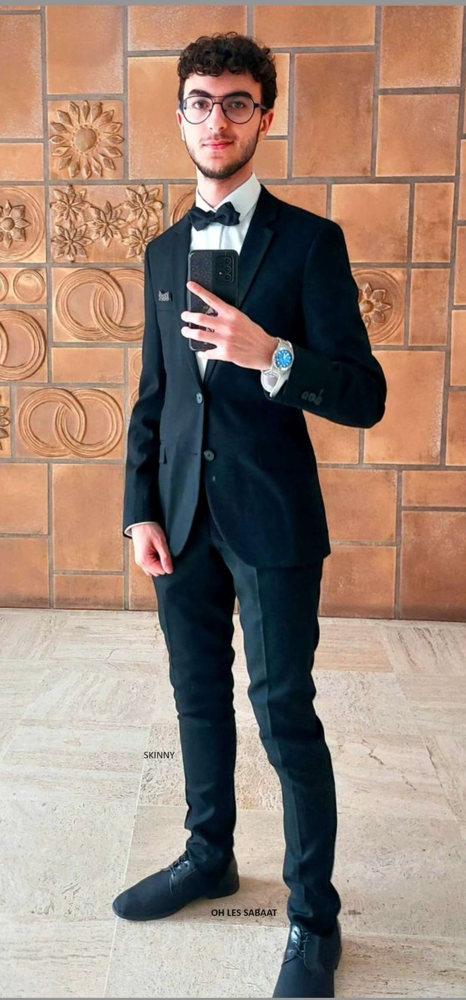
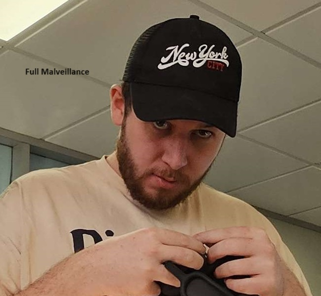
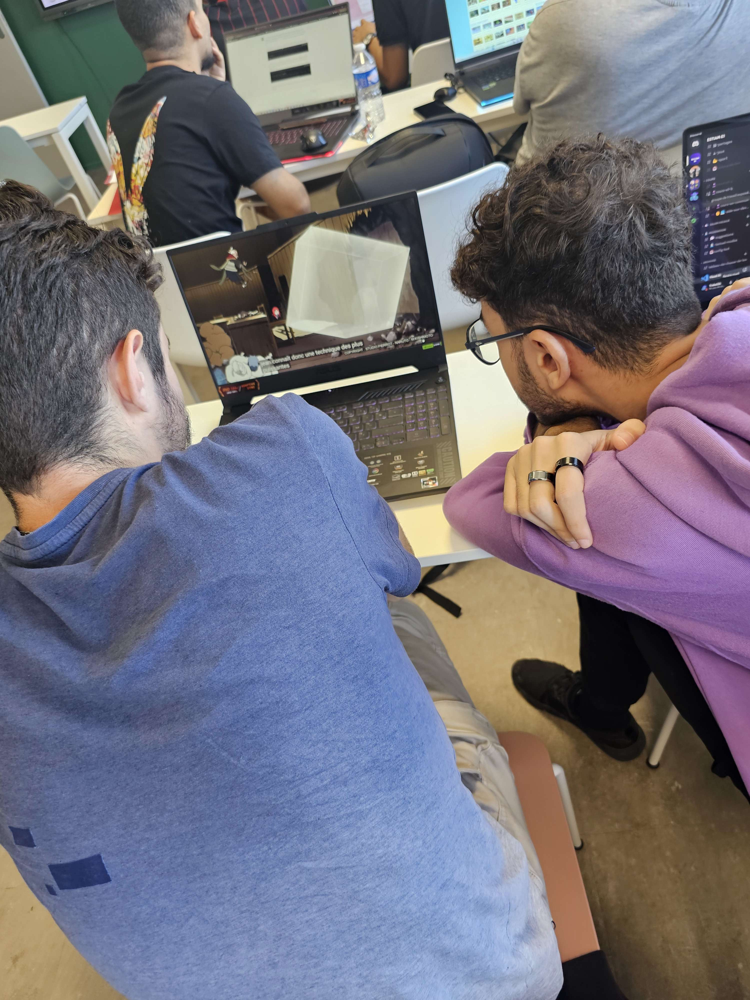

La vie de Noam à L'Estiam
Étant un étudiant plutôt bavard, il se lia d'amitié avec...
Sonya, son premier amour dans la classe...


Avec qui l'amour disparaîtra si rapidement après le début, mais il attira les flammes de son pire ennemi...
Après son BAC PRO harceleur pro, Antoine prit pour cible le pauvre Noam.
Dans cette lutte acharnée entre les deux protagonistes, il réussit à ca+lmer le malin.
Après toute cette haine, il trouva sa lueur d'espoir, son réconfort, son soleil... LEO.
il resteront amis prendant la duree de 4min 11seconde puis suite a une trahison de Leo
Noam pris tout son courage et le reste de force quil possede et vecu seul sans enfant mais heureux